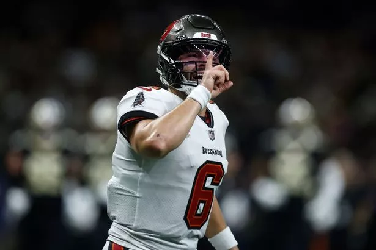
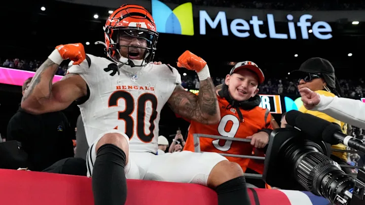
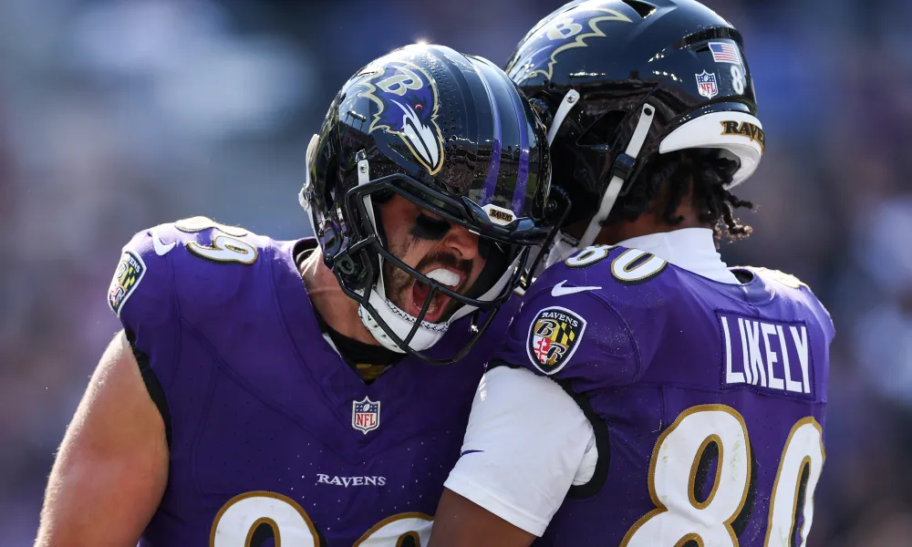
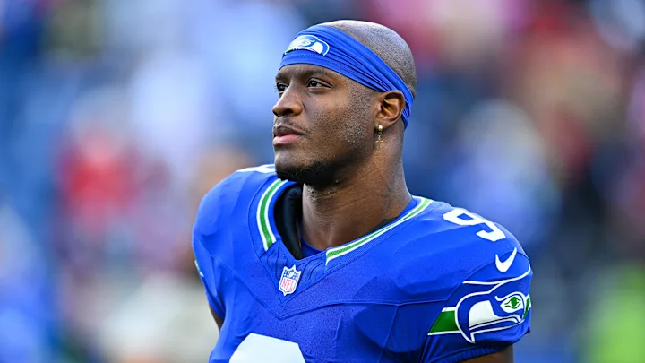
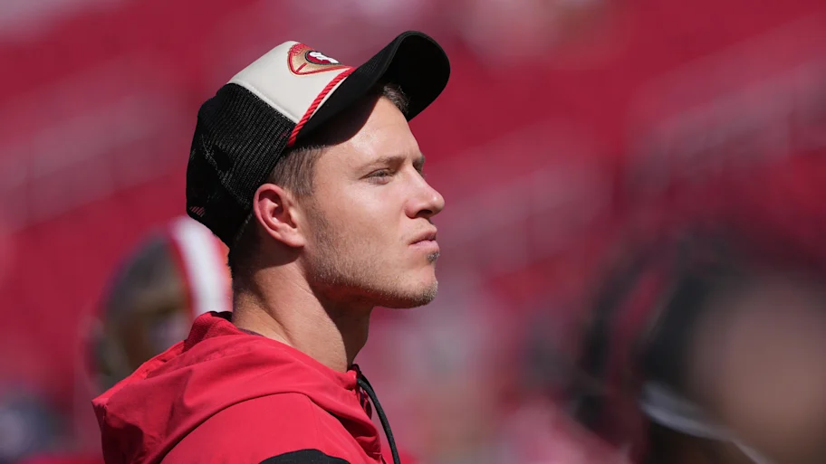
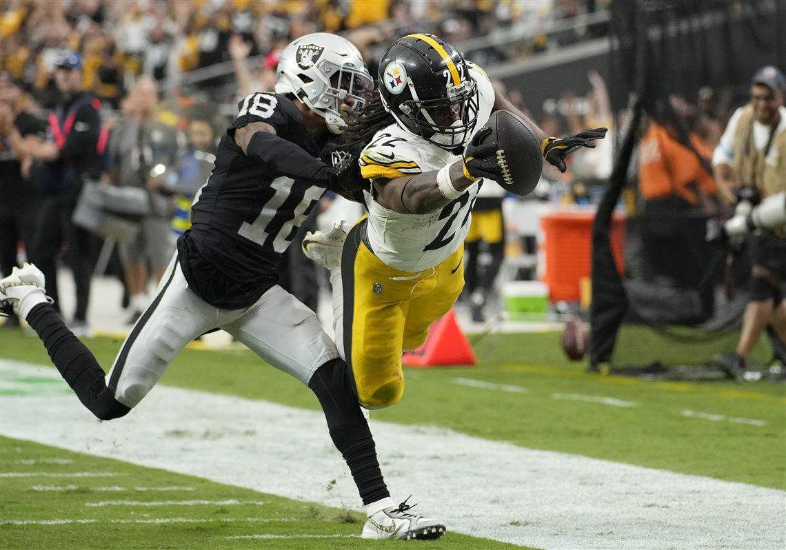
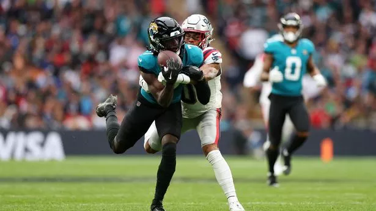
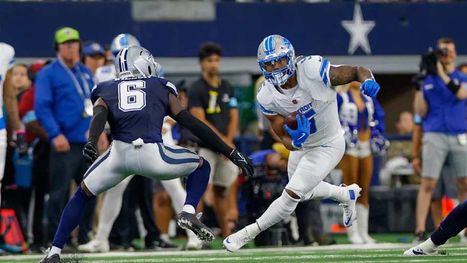
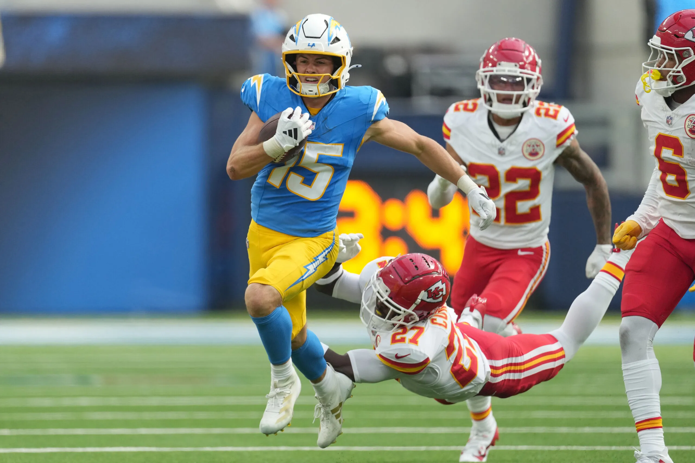
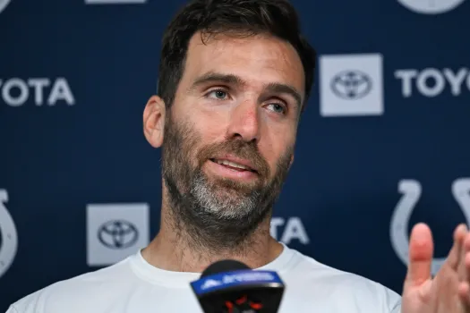

Matchup of the Week: Won’t You Be My Nabers (5-1) v. Jahmyr We Go Again (4-2)
There are five teams with four wins, and only two of them play each other this week, this is a great week for the top teams to take hold.
What to watch: * Good start for me with Broncos D flipping the initial Sleeper prediction from 40% to 60%, with Kamara held in check by the aforementioned. * Jake enters a week without starting both of the Lions RBs, can he fill the empty RB spot with Ekeler or Other? (EDIT: he doesn’t have Montgomery now!) * Honestly, will Mixon just go off and put me to rest? I hope not.
Waiver Wire Wizards and Weiners: * Quiet week with pockets getting empty. * Weiner: Kris - Sean Tucker $8 - He already dropped him after spending the most FAAB of anyone this week! * Wizard: Neil - Tyrone Tracy $6 - He’s gonna eat Singletary’s lunch, but on the Giants, how big is that lunch sack?
1. Seif (5-1 W2, PF: 836.28, $92 FAAB) ↔️
Do you think I like to write this??? God, can someone please take this man down!? (I’ll do my best!) Question going forward: Can Kamara produce at his high level without Carr?

2. PJ (4-2 W1, PF: 773.52, $28 FAAB) ⬆️⬆️
QB was the glaring hole on this team after week one, but God, how good has Baker Mayfield been? Question going forward: What version of Nick Chubb will we get? If it’s good, we might be in trouble.

3. Andy (4-2 W1, PF: 747.68, $46 FAAB) ⬆️⬆️
Lamar keeps carrying Andy’s squad with help from Stefon Diggs, since Amon-Ra has been up and down. Question going forward: Are Zach Moss OR Chase Brown an RB2?

4. Pangy (4-2 L1, PF: 683.58, $2 FAAB) ⬇️⬇️
Last weekend Pangy asked “what happens when you’re out of FAAB?” Guess he’s going to find out soon! Question going forward: Can Pangy pick the right Baltimore TE on any week? I doubt it!

5. Kris (3-3 W3, PF: 669.94, $60 FAAB) ⬆️
He does not give a fuck what his team name is! Swift and Kelce are both on other teams. 🙄 Question going forward: Can he get some consistency out of Ken Walker? Missing two games, then illness this week, but when he’s in, he’s in.

6. Me (4-2 L1, PF 706.06, $46 FAAB) ⬇️⬇️⬇️
Just trying to gas y’all up with this super super super low ranking. I’m on my way, don’t worry! Question going forward: will CMC return?

7. Neil (3-3 W1, PF 739.99, $67 FAAB) ⬆️
Devante Adams has arrived to eat GW’s target share. Question going forward: Relying on Conner and Najee, even after Najee’s nice performance last week, does Neil need help at RB?

8. Joel (2-4 L1, PF 635.66, $36 FAAB) ⬇️
Question going forward: After Brian Thomas has solidified Joel’s WR1/WR2, but who’s the Flex? Bucky looks iffy after last week’s emergence of Sean Hunter in a new three-man rotation.

9. CJ (1-5 L4, PF 683.74, $17 FAAB) ↔️
CJ makes the win-now trade, acquiring Monty for CMC. Can he break his four-game losing streak? Question going forward: Can Achane get it going again? With Tua on his way back, maybe.

10. Tony (0-6 L6, PF 613.32, $60 FAAB) ↔️
Question going forward: Will he win a game!?
Good luck to everyone besides Seif!

“I could be these guys’ dads.”
Joe FlaccoGOD WE’RE GETTING OLD